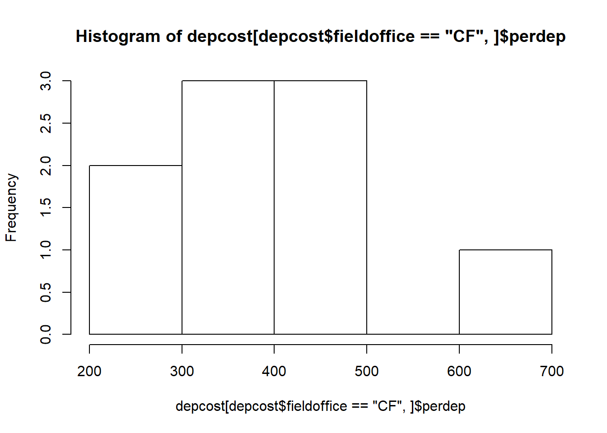
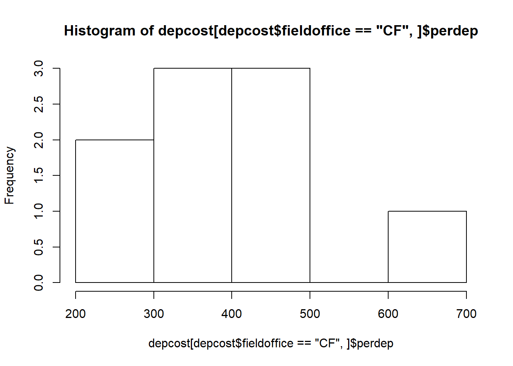
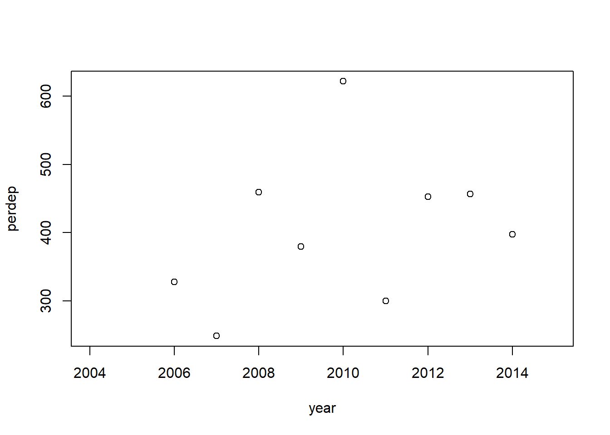
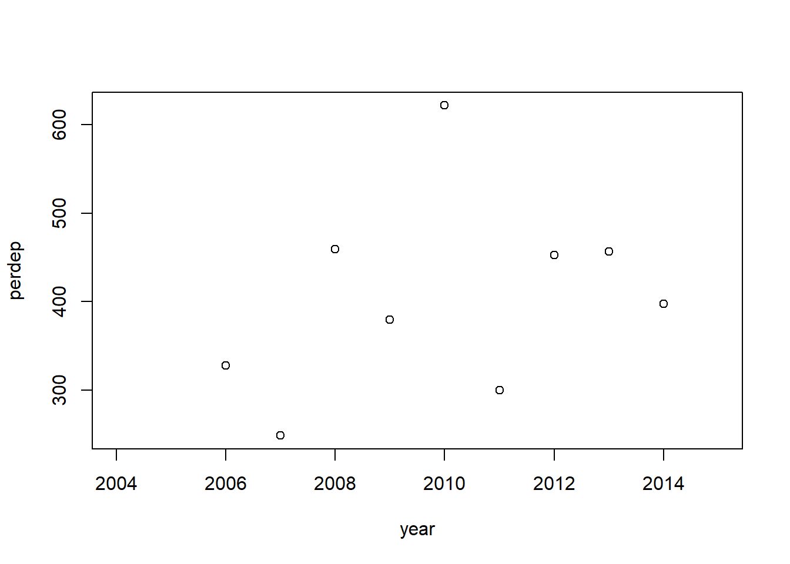

3. Maintain compatibility with legacy PSPAP data
- Proportion of randomly selected bends within segment
- Gears similarity: proportion of standard gears used by design
- Effort similarity: deviation from average effort
https://rpubs.com/ajlyons/autonumfigs rmarkdown::render(“_Report-0-00-master-report.Rmd“,output_format=”word_document“,output_file = paste(format(Sys.time(), ‘%Y%m%d%H%M’),”reboot-master-report.docx“,sep=”-“))# build page
Redesign of the Pallid Sturgeon Population Assessment Program (PSPAP) to PSPAP v. 2.0 is intended to update population assessment to support adaptive management of the Missouri River Recovery Program (MRRP). PSPAP v. 2.0 is considered a necessary part of the pallid sturgeon monitoring strategy, but it is not considered sufficient for monitoring needs. Instead, it is designed to complement three other components:
The four components compose the information framework needed to understand and forecast population responses to management action (fig. 1).
The remainder of this report focuses on the design process elements for PSPAP v. 2.0. Please note that the redesign process and possible changes affect many stakeholders. Stakeholders include state and federal agencies, agencies contracted to collect data, consulting groups working on the adaptive management plan, and the USACE which provides the resources to conduct the assessment. Therefore we used a structured decision making process to provide a transparent and rigorous approach to evaluate alternative monitoring designs in the context of stakeholder objectives and accounting for uncertainty (Conroy and Peterson 2013).
The need to redesign the PSPAP was triggered by the recognition that the current PSPAP may not allow evaluation of whether pallid sturgeon fundamental objectives identified in the Missouri River Adaptive Management plan (hereafter AM plan) were achieved on an annual basis or estimated with any level of certainty. Specifically, sub-objectives listed in section 4.1.1. of the AM plan specify
both of which are needed to achieve the fundamental objective set by the USFWS to preclude species jeopardy.
The first sub-objective (increase pallid sturgeon recruitment to age-1) is based on the understanding that bottlenecks for pallid sturgeon populations are likely in age-0 survival and that after the first year of life, survival increases substantially (DeLonay et al. 2016). Metrics to assess achievement of this objective are challenging because of the rarity of the species and difficulties with capturing age-1 (and age-2, age-3) fish and in accurately determining ages post XXXX years of age. As direct assessment of recruitment to age-1 is unlikely to be successful, the PSPAP v. 2.0 process has proceeded with the assumption that recruitment will need to be assessed through estimates of abundance and trend of older fish, determination of hatchery or natural origin, and back-calculation of age-1 recruitment rates through a calibrated population model. Success of the second sub-objective (maintain or increase numbers of pallid sturgeon as an interim measure) can be assessed through abundance estimates and trend data, but the assessment can be enhanced, and better linked to management actions, through incorporation of monitoring data into the collaborative population model.
The two sub-objectives were redefined as fundamental objectives for the pallid sturgeon population assessment program moving forward. Specifically the PSPAP objectives we idenfied as a being able to
The objective of the redesign effort is to identify, through a transparent approach, the value of alternative monitoring designs in fulfilling stakeholder monitoring objectives (includeing the two AM plan sub-objectives discussed above) given budget constraints. Our approach is to use a Bayesian Decision Network (BDN) to compare alternative PSPAP monitoring designs (Marcot et al. 2001, Nyberg et al. 2006, Conroy and Peterson 2013) within a structured decision making framework.
The following sections outline the approach used for this comparison. The methods described below are overviews intended to provide sufficient understanding of the process. It should also be noted that evaluating alternative monitoring designs is not trivial, and at times requires weeks of computing time to run estimators and various simulations with sufficient numbers of replications to characterize uncertainty in outcomes.
The approach used to evaluate alernative monitoring designs was intended to be rigorous and transparent because of the many stakeholders effected by potential modifications to the existing PSPAP program. Additionally, the methods used will provide a tool for the U.S. Army Corp of Engineers (USACE) to make transparent decisions in the face of uncertain future monitoring funding levels that will likely result in difficult future decisions.
We used a structured decision making approach to elicit stateholder objectives, simulation modeling to generate reference populations, alternative monitoring designs to estimate relevant population metrics, and valuation of stakeholder objectives to quantify the utility of monitoring design alternatives. The methods are covered in 5 sections detailing
Many state and federal agencies contracted to collect pallid sturgeon population assessment data will be affected by changes to the current PSPAP design, as well as consulting groups and management agencies dependent on monitoring data to inform adaptive management. We convened a face-to-face stakeholder workshop during the MRNRC meeting in March 2017 to present an overview of the redesign process and to elicit stakeholder objectives for the program. Five fundamental information objectives of the PSPAP were identified at the workshop: 1) quantify recruitment to age-1, 2) quantify population trend and abundance, 3) provide collaborative population model inputs (improved parameter estimates), 4) maintain compatibility with legacy PSPAP data, and 5) remain within cost constraints.
Stakeholders identified many means objectives that potentially contribute to the fundamental objectives; they also provided critical information on logistics of sampling. Means objectives included varying population metrics to monitor and approaches needed to quantify the metrics. Metrics identified during the objectives elicitation were organized to 8 categories. Specifically, stakeholders identified metrics relating to population structure (e.g., age and size structure, sex ratio), reproductive status (e.g., fecundity, reproductive cycling, size at sexual maturity), health status (e.g., stress, condition, diet, contaminants), population augmentation, movement (i.e., spawning, seasonal), demographic rates (e.g., recruitment, survival), fish community (e.g., competition, invasive species), and genetic status (e.g., effective population size, hybridization, local adaptation).
Stakeholder objectives were organized in an influence diagram during the workshop. The influence diagram serves 2 purposes. First, it clarifies stakeholders’ fundamental and means objectives, thereby increasing transparency. Second, the influence diagram can be developed into a Bayesian Decision Network (BDN) to evaluate alternative PSPAP monitoring designs (Marcot et al. 2001, Nyberg et al. 2006, Conroy and Peterson 2013).
The numbered objectives correspond to fundamental objectives identified during the workshop. Bulleted lists within each bold, numbered objective are measurable attributes that can be used to quantify each objective. For example there are 3 attributes under objective 1 that can be quantified for each monitoring alternative. Assuming these attributes are scaled to a common scale (e.g., 0 to 1, 0 to 100) then each bullet may receive a weight of 33% if each attribute is equally important to decision makers. Alternatively these values can be weighted to reflect perceived importance by decision makers (see “Valuation of monitoring design utility” for details on combining metrics).
A set of reference populations of known pallid sturgeon abundance was needed to evaluate alternative monitoring designs and their ability to achieve the fundamental objectives identified by stakeholders (See previous section: “Eliciting Stakeholder Objectives”). A reference population provides data on the annual survival and movement of each fish in the population (including new recruits) at the bend-level (Figure 1). Since fish length may influence sampling effectiveness (e.g. gear selectivity), data on individuals (e.g., growth) was also simulated.
The objectives of this simulation were to:
Assumptions 1 and 2 are reasonable simplifications for the purposes of this evaluation and have been used in various fish studies {Steffensen, Holan & Wu, & Rotella}. Assumptions 3 and 4 match the assumptions of many closed population estimators from mark-recapture estimation to robust design estimation. Making these assumptions allows for the evaluation of such estimators under the best possible movement conditions—if an estimator performs poorly under the best movement conditions, then its use in less favorable movement conditions is further questionable. However, since it is unclear how closely assumptions 3 and 4 are met in reality, we explore and discuss the consequences of breaking these movement assumptions on estimator outputs in Appendix ??. Lastly, since recruitment is expected to vary from year to year and fish are expected to migrate to spawning habitats within basin (and not necessarily stay in particular bends), assumption 5 is appropriate for studying pallid sturgeon.
This analysis was constrained to generate reference pallid sturgeon populations for segments and bends within the upper basin (segments 1-4) and lower basin (segments 7-10, 13 and 14) of the Missouri River. Bends of varying length were used to generate the spatial distribution of pallid sturgeon (Table 1).
The pallid sturgeon reference population was initialized using data from the PSPAP database and the pallid sturgeon literature. Population initialization required 3 steps: 1. initialize bend-level abundance, 2. initialize lengths and growth parameters of individuals within each bend, 3. assign demographic rates (i.e., sex, origin) to each individual.
We populated each river bend with pallid sturgeon based on expected segment-level densities by origin (Table 2). The number of pallid sturgeon assigned to a bend was stochastically generated from a Poisson distribution given the segment density and bend length as:
\[N_{segment,bend}\sim Poisson\left(\sum_{origin}\lambda_{segment,origin}\cdot l_{segment,bend}\right),\text{(1)}\]
where
Generating bend abundances from a Poisson distribution allows for variation in bend densities among bends within segment while guaranteeing that the bend is populated with a whole number of fish. Additionally, one could derive a spatial Poisson distribution with the following assumptions:
We randomly assigned an initial length to each individual fish. Initial lengths were generated from a segment specific distribution constructed from recent (2015 and 2016 sampling season) PSPAP database length data. Only pallid sturgeon data where both length and weight were reported as non-negative values were used. Additionally, data points that were residual outliers to the log-log regression of weight and length were excluded from the analysis. Lastly, only lengths greater than 200mm were included in the analysis. Lengths 200mm or less were considered to be from age-0 pallid sturgeon and these fish would instead be added to the reference population through an analysis of next year’s recruitment (described in a later section below).
The cleaned up data was then analyzed by segment. For each segment, a numerical inverse cummulative distribution function for length was generated by interpolating between the percentiles of the length data for the given segment. This was achieved using “approxfun” in R’s stats package. Inverse cummulative distribution functions take a probability value between 0 and 1 as input and output a length value. Therefore, we were able to generate an individual’s initial length by using a uniformly sampled probability value as input to the inverse cummulative distribution function associated with the individual’s segment.
Additionally, we assigned individual von Bertalanffy growth parameters \(L_\infty\) and \(k\), or the asymptotic length and Brody growth coefficient of a fish’s growth trajectory, respectively, to each fish. Growth parameters were generated from a basin specific bivariate normal distribution fitted to the length data in the PSPAP database.
To avoid unrealistic growth parameter values we truncated each bivariate normal distribution (one for each basin) to the middle 80%. All points \((L_\infty, k)\) of the truncated distribution are contained on or within an ellipse centered at \(\mathbf{\mu}=(\mu_{L_\infty}, \mu_k)\), the basin specific mean values for \(L_\infty\) and \(k\). Since the R package \(\texttt{tmvtnorm}\) truncates multivariate normal distributions to rectangular regions, as opposed to elliptical regions, we used a different approach to randomly draw points from the desired elliptical region.
In short, we first drew points from the middle 80% of a standard bivariate normal distribution and then transformed these points to the bivariate normal distribution of interest, giving us randomly drawn points that fall on or within the 80% ellipse. The truncation process was achieved using \(\texttt{rtruncnorm}\) twice in R, once for the normal distribution associated with \(L_\infty\) and then again for the normal distribution associated with \(k\) conditional on \(L_\infty\). For more details see Appendix ??.
After initializing the reference population, we track all individual fish for 10 years, recording individual survival status, bend location, and length on a yearly basis. Additionally, new recruits may be added to the population and tracked.
Survival is stochastic but simulated with a survival probability that is homogeneous among individuals with all fish in the river having an equal probability, \(\phi\), of surviving the year. Survival probability is independent of individual age, length, sex, origin, location, and year. In other words, each year individual fish survival is a Bernoulli trial with fixed probability of success, \(\phi\).
Annual growth is projected by individual von Bertalanffy growth curves as
\[ L(t+1)=L(t)+(L_\infty-L(t))(1-e^{-k}), \text{(2)}\]
where \(L(t)\) is the individual’s length during year \(t\) and each fish has its own randomly generated asymptotic length, \(L_\infty\), and Brody growth rate, \(k\), as described in the previous section on initializing the population.
Within basin movement occurs between years and is considered at the bend-level. Pallid sturgeon may move from one bend to another bend within the same segment, from one bend to another bend within a different segment (but same basin), or stay within the same bend. Movement probabilities are based on current bend locations with the probability of being in bend \(j\) the following year increasing as the distance between the fish’s current bend and bend \(j\) decreases. In particular,
\[\mathbb{P}\Big(B(t)=j \quad | \quad B(t-1)=i\Big)=\frac{e^{-\beta d(i, j)}}{\sum_k e^{-\beta d(i, k)}}, \qquad \text{(3)}\]
where \(i\), \(j\), and \(k\) are particular bends, \(B(t)\) is the individual’s bend location in year \(t\), \(d(i, k)\) is the distance in river kilometers (RKM) from the center of bend \(i\) to the center of bend \(k\), and \(\beta\) is a basin specific parameter1.
Currently, we have simulated reference populations that do not move (individuals can always be found in the same bend from one sampling season to the next), as well as reference populations with very little between year movement (\(\beta=1\); high site fidelity). This allows for an evaluation of whether there are any stark discontinuities in optimal monitoring decisions between the simplified case of no movement and the case of very little between year movement. Additionally, to account for the uncertain nature of movement probabilities, we plan to vary \(\beta\) from simulation to simulation, allowing the analysis of populations that range in having high site fidelity to low site fidelity (Figure 2). Since (3) is discontinuous in terms of river kilometer, a similar bend-level conditional probability distribution that is derived from movement probabilities that are continuous in space is also being considered as a movement model.
Each year recruitment was determined by two factors: (1) whether or not spawning that led to successful recruitment occurred and (2) given recruitment occurred, how many age-0 fish survived to age-1 (number of recruits). Recruitment years occurred with a fixed expected frequency (e.g. once every 3 years) and were determined each year as the result of a Bernoulli trial (e.g. probability of success 1/3). During years when recruitment occurred, the number of recruits is drawn from a basin specific Poisson distribution. Assuming that spawning results in a large number of free embryos and that survival to age-1 is rare, then a Poisson distribution mathematically provides a good approximation for the number of recruits. Furthermore, the use of a Poisson distribution aligns well with how actual recruit data may be analyzed (CITATION), as well as with the set-up of the collaborative population model.
Each new recruit is tracked after being randomly assigned an age-0 location within basin, an age-0 length of 200mm, and von Bertalanffy growth parameters. Age-0 bend locations are generated from a discrete uniform distribution that includes all bends within basin, while growth parameters are generated from the same basin specific truncated bivariate normal distribution used during the initialization of the population. Initial length was chosen as 200mm, because (REASON HERE). Despite fixed initial lengths, the growth trajectories of recruits will differ due to variation in their individual growth parameters.
The pallid sturgeon reference population is initialized using data from the PSPAP database and the pallid sturgeon literature. Each river bend is populated with pallid sturgeon based on expected segment-level densities, while each fish is assigned an initial length and von Bertalanffy growth parameters \(L_{inf}\) and \(k\) from segment-level and basin -level distributions, respectively. Individual fish are then tracked for 10 years, recording individual survival status, bend location, and length on a yearly basis. Survival is binomially distributed with fixed parameter \(\phi\), and growth is projected by individualized von Bertalanffy growth curves. Within-basin movement is based on a pallid sturgeon’s current bend location with the probability of being in a particular bend the following year increasing as distance to that bend decreases. Immigration and emigration (for example, to/from the Mississippi River) are critical unknowns that can also be evaluated within the reference population. Recruitment occurs randomly with a fixed expected frequency (e.g., every year, every 3 years). The number of recruits, given there is recruitment, is drawn from a basin-dependent Poisson distribution. Each new recruit is is assigned a location, length, and growth parameters and is tracked on a yearly basis. The population simulation here is generalized from the collaborative pallid sturgeon population model
The need to redesign the PSPAP was triggered by the recognition that the current PSPAP may not allow evaluation of whether the pallid sturgeon fundamental objectives identified in the AM plan were achieved on an annual basis or estimated with any level of certainty. Specifically, sub-objectives listed in section 4.1.1. of the AM plan specify 1) increase pallid sturgeon recruitment to age-1, and 2) maintain or increase numbers of pallid sturgeon as an interim measure until sufficient and sustained natural recruitment occurs, both of which are needed to achieve the fundamental objective set by the USFWS to preclude species jeopardy. These two sub-objectives are redefined as fundamental objectives in the context of the monitoring program to quantify recruitment to age-1 and quantify pallid sturgeon population trend and abundance.
Metrics to assess achievement of the first sub-objective (increase pallid sturgeon recruitment to age-1) are particularly challenging because of the rarity of the species and existing technical difficulties with capturing age-1 (and age-2, age-3) fish and in accurately determining ages. As direct assessment of recruitment to age-1 is unlikely to be successful, the PSPAP v. 2.0 process has proceeded with the assumption that recruitment will need to be assessed through estimates of abundance and trend of older fish, determination of hatchery or wild origin, and back-calculation of age-1 recruitment rates through a well-calibrated and validated population model. As reported in Section 4.1.1 of the AM plan, metrics for assessing the second sub-objective (maintain or increase numbers of pallid sturgeon as an interim measure) include population estimates for pallid sturgeon for all size and age classes, where age classes are estimated by the population model.
As indicated above, estimates of population abundance and trend are key to assessing both AM plan pallid sturgeon sub-objectives. Moreover, the objective of the PSPAP redesign effort is to identify monitoring designs (sampling designs and abundance and trend estimators) that will give optimal estimates given budget constraints. Therefore, both the generation and the assessment of abundance and trend estimates play a key role in this analysis. Here we focus on the generation of the abundance and trend estimates, i.e. the metrics for assessing the AM sub-objectives, leaving the assessment of these estimates to the following section.
Generating abundance and trend estimates under a particular monitoring design occurs in two steps:
Since the simulation of catch data is stochastic and certain values (e.g., catchability) are uncertain, these steps were repeated several times for each monitoring design, generating a fuller picture of the range of outcomes that can be expected under a particular monitoring design.
Monitoring designs consisted of a suite of sampling and estimator decisions (Figure ??). While we consider variations on current sampling decisions, compatibility with existing PSPAP data can be achieved by maintaining the existing sampling framework where each management unit is divided into segments, river segments divided into bends, and habitat units sampled with each bend. Additionally, continued use of current PSPAP standard gear types defined in Welker et al. (2017), which have been identified over the duration of the PSPAP to be effective, will potentially maintain compatibility with existing PSPAP data. A significant modification, however, will be required to estimate population abundance. Specifically, the use of a capture-recapture estimator to estimate demographic rates and abundance is considered.
Several capture-recapture estimators exist to estimate abundance, demographic rates, as well as abundance and demographic rates. A capture recapture estimator that simultaneously estimates demographic rates and abundance can potentially achieve metrics and targets specified in sub-objectives 1 and 2. Historically, a Jolly-Seber model, was used to simultaneously estimate abundance and survival from recapture of marked individuals from singular capture occasions over time (Jolly 1963, 1965, Seber 1965). However, the lack of multiple within occasion recapture attempts required potentially unrealistic assumptions to estimate capture probability. Some of these assumptions can be relaxed by sophisticated model formulations or fitting the capture-recapture model as a Bayesian state space model, which has been done for pallid sturgeon in the RPMA 4 by Wu and Holan (2016). Alternatively, using multiple recapture efforts within a sampling year (primary occasions) allows direct estimation of capture probability as well as abundance and survival, which was described by Pollock (1982) and referred to as the robust design.
The robust design frame work has been applied across a wide range of taxa to estimate demographic rates and population abundance. Its use has been extended to studies of species occurrence (i.e., occupancy models; MacKenzie et al. 2002, Tyre et al. 2003) and abundance (N-mixture models; Royle 2004b, Royle 2004a) of unmarked individuals. The robust design provides a rigorous framework that allows for the estimation of relevant demographic rates and abundance using marked individuals. As originally described by Pollock (1982), a robust design consists of primary sampling occasions with secondary sampling occasions nested with the primary sampling occasion (Figure 1). Primary occasions are spaced temporally to capture processes like survival and growth. Secondary occasions occur over a short time frame, short enough that closure of the population from demographic processes (i.e., recruitment, mortality, immigration, emigration) can be assumed. The secondary sampling occasions provide multiple opportunities for individuals to be captured and thereby allowing capture probability and abundance to be estimated.
The use of a robust design capture recapture approach to estimate Missouri River pallid sturgeon abundance, and demographic rates are not novel. The first application was Steffensen et al. (2012) as part of the annual brood stock collection in segment 9. Similarly, Winders and Steffensen (2014) used a robust design to estimate abundance and demographic rates for a portion of segment 10 using broodstock collection data. In both studies, pallid sturgeon were captured by setting multiple trotlines at random locations in the study area over a short period. The annual brood stock sampling was the primary occasion and daily capture efforts were the secondary occasions in both studies. Given the study design, survival was estimated over the open period (i.e., between annual broodstock collection events). Capture probability was estimated for each daily effort within the primary period and abundance during the closed period (i.e., broodstock collection). Additionally, both studies were able to estimate movement parameters that account for pallid sturgeon leaving or arriving in the study area between closed periods.
Specific parameters estimated by the robust design There are variations of the robust design that estimate varying parameters. The most commonly used version, as well as the version used by Steffensen et al. (2012) and Winders and Steffensen (2014) is the version that estimates 6 parameters. Specifically these parameters are:
Depending on the situation the number of parameters estimated can be reduced by assuming initial capture probability is equal to recapture probability where \(c=p\). Similarly, \({{\gamma }^{\prime }}\) and \(\gamma^{\prime\prime}\) can be specified to represent hypotheses about immigration and emigration processes. For example, even flow of fish in and out of the systems can be specified by imposing equality of immigration and emigration terms where \({{\gamma }^{\prime }}={{\gamma }^{\prime \prime }}\). Population abundance (\(N\)) at each time period is a derived parameter calculated as: \(N={{f}_{0}}+M\) where, \(M\) is the number of marked fish. Uncerainty around parameter estimates derived quantities can be estimated by profile likelihood and use of the delta method if estimated by maximizing the likelihood of the model given the data (Hilborn and Mangel 1997, Powell 2012). Uncertainty can also be quantified simultaneously for estimated and derived parameters if fit by MCMC using a Bayesian approach.
…For each of the simulated reference populations, various sampling decisions can be implemented to obtain simulated catch data. The choice of monitoring design determines the particular combination of decisions used in this process—system-level sampling design, within bend and year sampling design, gear selection, and measurements taken on individual fish are all prescribed by the monitoring design (Figure 1). Alternative sampling decisions of interest were identified during the PSPAP workshop at the 2017 MRNRC meeting, as well as during follow-up input from stakeholders and experts in the system. Simulated catch data have been generated from the range of the identified alternative sampling decisions, with the exception that some individual measurements have yet to be implemented and the spatially balanced system-level sampling design is still a work in progress.
The objectives of the catch data simulations are, for each monitoring design considered, to:
Assumptions 1 and 2, while unlikely to be perfectly met, are reasonable assumptions for working with pallid sturgeon (ref) and are typical assumptions made when working with capture-recapture data (ref). For a well designed sampling protocol, assumption 3 is also a reasonable, although we recognized that it may not be perfectly met due to safety or other unforeseen issues.
Describing expected catch as in assumption 4: \(C=qfN=pN\), where \(p\) is the capture probability and \(p=qf\), is also a commonly made assumption (ref). This equation is likely a good approximation for small effort values (\(f\)); however, it is clear that as effort increases without bound, capture probability (\(p\)) will become greater than 1 for fixed \(q\). In other words, the model \(C=qfN\) breaks down for large effort values, and therefore, we must be cautious drawing conclusions from outcomes that were generated from large effort values. To indirectly account for this we have flagged cases in our simulations where the occasion level capture probability is higher than 0.4.
To understand assumption 5, it is important to first describe the sampling relationship among years, occasions, deployments, and bends. In short, during each year a number of bends will be selected to be sampled. During a particular year, each selected bend will be sampled on several occasions. Occasions are short periods of time, say 24 hours, during which multiple deployments of a gear are used to sample the population throughout the bend. Using this terminology assumption 4 means both that there is a zero probability that the same fish will be caught by two separate deployments (within the same occasion), and that any particular deployment does not affect the probability that a fish is caught by any other deployment within the same sampling occasion. In cases where there is little fish movement within occasions or where gears are set sufficiently far apart, these assumptions are very likely met.
For each combination of reference population and monitoring design, we simulated catch data (Figure 2) by first selecting which bends to sample throughout the 10 years, and then selecting which individual fish (of those located in the sampled bends during sampling) were caught during each capture occasion.
All monitoring designs considered included sampling bends located within segments 2-4, 7-10, 13, and 14. The number of bends sampled within each segment was chosen to be consistent with past sampling procedures. In particular, we chose the number of sampled bends within segement to match those given in USACE’s 2017 PSPAP Guiding Document Table A1 (Welker et al. 2017) and reproduced in Table 1 below. The way selected bends were generated, however, varied and was determined by the choice of system-level sampling design laid out in the monitoring design. In particular, three alternative system-level sampling designs were considered: a random design, a fixed design, and a spatially balanced design (Stevens and Olsen 2004). Under the random sampling design bends within a segment were chosen each year uniformly at random, while under the fixed sampling design they were chosen uniformly at random for the first year and then fixed to be sampled each of the following 9 years. A combination of the fixed and random designs can also be implemented,and the spatially balanced design is in the works.
While monitoring designs can also differ in decisions made about within bend and year sampling design, gear selection, and measurement choices, none of these decisions affected which bends were selected for sampling each year. They did, however, affect the individual capture histories of the catch data.
Once the bends to be sampled were selected for each of the 10 years, 10 years of catch data can be simulated. Each year, catch was simulated spatially at the bend level and temporally at the sampling occasion level. We defined a sampling occasion as a short time period (e.g. 24 hours) within a year during which the given bend was sampled. A fixed number of sampling occasions per year per sampled bend was given as part of the monitoring design of interest. In particular, we simulated catch data for monitoring designs that included 1-4 sampling occasions per year for each sampled bend. Additionally, in order to thoroughly sample a bend during a sampling occasion, several gear deployments are used to capture fish. Currently simulations all utilize 8 gear deployments per sampling occasion; however, future analysis will include catch data simulated for a range of deployment numbers.
For a particular sampled bend during a particular year, each fish located in the given bend had a probability, \(p_{occ}\), of being captured during occasion \(occ\). This occasion level capture probability varied from bend to bend and occasion to occasion, as it was calculated from individualized deployment catchability and effort values. For each of the 8 deployments within occasion \(occ\), an effort value \(f\) was generated from a gear and basin specific gamma distribution, and a catchability value \(q\) was generated from a gear specific distribution. Deployment specific capture probabilities, \(p\), were calculated as \(p=q\cdot f\), and the 8 within occasion deployment capture probabilities were summed (and bounded at 1) to obtain occasion level \(p_{occ}\). Therefore, if a fish was located in the given sampled bend during the given year, its capture was a Bernoulli trial with probability of success \(p_{occ}\), resulting in total occasion level catch numbers for the particular bend being binomially distributed.
Distributions for deployment level effort (\(f\)) were generated using the PSPAP database. We defined effort as the time (in minutes) that a gear was set, dragged, or pulled for during a single deployment2. Since effort was calculated using the start and stop times, all PSPAP data without a start or stop time was excluded from this analysis. The relevant data entries were then merged with the gear data and a stop date column was added to take into account gears that were set over night. Effort was calculated in minutes as the difference between the stop time and the start time with any discrepancies in the set date and stop date taken into account by using the strptime function in R to link the start and stop times to their corresponding set and stop dates, respectively. Before generating the effort distributions, all entries resulting in negative effort values were removed.
Gamma distributions were fit to the cleaned up PSPAP effort data for standard gear types3 by basin. The mean effort, standard deviation of the effort data, minimum effort, maximum effort, and median effort were also calculated for each gear by basin (Table 2). In general, gamma distributions provided a good fit to the effort data (e.g. Figure 3), but see Appendix ?? for more details.
Gear specific catchability distributions were set up such that the log-odds of catchability (\(q\)) was normally distributed: \[\ln\left(\frac{q}{1-q}\right)\sim \mathcal{N}\left(\mu, \beta_0\right),\] where \(\mu=\ln\frac{\mu_q}{1-\mu_q}\) and \(\mu_q\) is the expected catchability of the gear. Because deployment catchability values, or the probability of catching a single fish with one unit of effort, are a source of uncertainty we allowed the choices of \(\mu_q\) and \(\beta_0\) to vary for among catch data simulations (CITE A TABLE OR SOMETHING THAT LISTS RANGES OF PARAMS).
The choice of monitoring design also indicates which gears should be used in sampling. This is important as different gears will have different catch rates and associated costs of deployment. Currently, catch simulations include catch data from gill nets, trammel nets, otter trawls, trotlines, or a combination of these.
Additionally, gears may be size selective. In this case different gears will interact with the size distribution of the reference population to produce different catch data outcomes. Because gear selectivity is not precisely known, we are currently working on accounting for size selectivity by comparing the catch data results simulated under various selection curves.
For a particular bend and year, a Bernoulli trial simulated whether or not an individual fish was captured during each occassion, producing a within year capture history for each fish. Fish that were never captured had their capture histories removed from the data. Fish that were captured had their individual attributes for the given year recorded from the reference population data. Specifically, whenever a fish is successfuly caught its fish id, location (bend), timing (occasion within year) of catch, gear used, and length are recorded.
We have primarily focused on measuring length, as it is vital to the metrics for sub-objective 24 as outlined in Section 4.1.1 of the 2016 AM plan. Additionally, we are currently working on including fish sex, origin (natural or hatchery), and age due to their importance to sub-objective metrics and to understanding effective populations size. Several other individual measurements were voiced to be of interest to stakeholders at the 2017 MRNRC PSPAP Workshop. These measurements may be considered as part of future analyses.
The objectives of estimating population metrics are, for each monitoring design considered and for each of the catch data sets generated under the given monitoring design, to:
We made the typical assumptions associated with the use of each individual estimator. In general, these assumptions match the assumptions used to produce the reference populations (SECTION) and simulated catch data (SECTION). Any major assumptions additional to those previously discussed are included in the discussion of the particular estimator to which it applies.
Since accurately identifying fish age in the field is challenging and the AM plan specifies that age classes are to be estimated by the collaborative population model, we limit our current focus to overall population estimates for pallid sturgeon, as well as population estimates by size class.
Whenever possible, population abundance estimates were made at the bend level and then aggregated to the segment level; however, monitoring designs that employed the robust design abundance estimator had difficulty producing estimates at the bend spatial scale. Therefore, all monitory designs using the robust design estimator directly estimated segment-level abundances.
Applications of Capture-Recapture Robust Design to PSPAP
The fundamental species objective identified by the USFWS for the pallid sturgeon is: Avoid jeopardizing the continued existence of the pallid sturgeon from the US Army Corps of Engineers actions on the Missouri River. Means to achieve this fundamental objective included increasing pallid sturgeon recruitment and maintaining or increasing current population levels.
The means to achieve the fundamental objective are specified as 2 sub-objectives with quantifiable metrics and targets as:
Increase pallid sturgeon recruitment to age 1 Metric: Catch rates of age 2 and 3 year-old pallid sturgeon.
Target: Short-term: recruitment; long-term: projection from population models of an annual egg to age-1 survival rate > 0.03.
Maintain or increase numbers of pallid sturgeon until sufficient and sustained natural recruitment occur.
Metric: Catch rate of all size classes Target: Viable population size necessary to successfully overcome recruitment bottleneck. Minimum of 5000 adults in each management unit.
While a catch per unit effort based approach to population monitoring may be used to calculate the metrics for sub-objective 1 and 2 it fails to estimate sub-objective targets. Specifically, CPUE is a relative index of population abundance and therefore it may document recruitment if age-0 and age-1 pallid sturgeon are captured but it does not estimate early life history survival rates. Absolute population estimates cannot be achieved unless gear-specified catchability coefficient exists or can be estimated to link catch and effort to predict abundance as:\(Abundance=Catch\cdot Effort\cdot Catchability\). Catchability coefficients are difficult to estimate, unlikely to be constant (i.e., gear-specific catchability varies among habitat type, season, fish species), and assumed to be constant across abundance levels. Catchability assumptions have received some scrutiny through meta-analysis of multiple fish stocks which suggest that fish stocks exhibit a curvilinear relationship of catchability with abundance, most commonly exhibiting a phenomenon known as hyperstability, where CPUE remains while abundance declines (Harley et al. 2001). It should be noted that gear-specific catchabilities have not been estimated for pallid sturgeon. The consequences of violating CPUE assumptions are uncertain. Despite this uncertainty, the CPUE based PSPAP has been successful in achieving PSPAP objectives, however, modifications will be needed to achieve sub-objective 1 and 2.
Modifying the existing PSPAP program will ideally maintain a degree of compatibility with existing data while providing population level estimates of recruitment, trend, and abundance to achieve the metrics and targets specified in sub-objectives 1 and 2. Compatibility with existing PSPAP data can be achieved by maintaining the existing sampling framework where each management unit is divided into segments, river segments divided into bends, and habitat units sampled with each bend. Additionally, continued use of current PSPAP standard gear types defined in Welker et al. (2016), which have been identified over the duration of the PSPAP to be effective, will potentially maintain compatibility with existing PSPAP data. A significant modification will be required to estimate population abundance, specifically the use of a capture-recapture estimator to estimate demographic rates and abundance.
Several capture-recapture estimators exist to estimate abundance, demographic rates, as well as abundance and demographic rates. A capture recapture estimator that simultaneously estimates demographic rates and abundance can potentially achieve metrics and targets specified in sub-objectives 1 and 2. Historically, a Jolly-Seber model, was used to simultaneously estimate abundance and survival from recapture of marked individuals from singular capture occasions over time (Jolly 1963, 1965, Seber 1965). However, the lack of multiple within occasion recapture attempts required potentially unrealistic assumptions to estimate capture probability. Some of these assumptions can be relaxed by sophisticated model formulations or fitting the capture recapture model as a Bayesian state space model, which has been done for pallid sturgeon in the RPMA 4 by Wu and Holan (2016). Alternatively, using multiple recapture efforts within a sampling occasion allows direct estimation of capture probability as well as abundance and survival, which was described by Pollock (1982) and referred to as the robust design.
The robust design frame work has been applied across a wide range of taxa to estimate demographic rates and population abundance. Its use has been extended to studies of species occurrence (i.e., occupancy models; MacKenzie et al. 2002, Tyre et al. 2003) and abundance (N-mixture models; Royle 2004b, Royle 2004a) of unmarked individuals. The robust design provides a rigorous framework that allows for the estimation of relevant demographic rates and abundance using marked individuals. As originally described by Pollock (1982), a robust design consists of primary sampling occasions with secondary sampling occasions nested with the primary sampling occasion (Figure 1). Primary occasions are spaced temporally to capture processes like survival and growth. Secondary occasions occur over a short time frame, short enough that closure of the population from demographic processes (i.e., recruitment, mortality, immigration, emigration) can be assumed. The secondary sampling occasions provide multiple opportunities for individuals to be captured and thereby allowing capture probability and abundance to be estimated.
Application of robust design to Pallid Sturgeon The use of a robust design capture recapture approach to estimate Missouri River pallid sturgeon abundance, and demographic rates are not novel. The first application was Steffensen et al. (2012) as part of the annual brood stock collection in segment 9. Similarly, Winders and Steffensen (2014) used a robust design to estimate abundance and demographic rates for a portion of segment 10 using broodstock collection data. In both studies, pallid sturgeon were captured by setting multiple trotlines at random locations in the study area over a short period. The annual brood stock sampling was the primary occasion and daily capture efforts were the secondary occasions in both studies. Given the study design, survival was estimated over the open period (i.e., between annual broodstock collection events). Capture probability was estimated for each daily effort within the primary period and abundance during the closed period (i.e., broodstock collection). Additionally, both studies were able to estimate movement parameters that account for pallid sturgeon leaving or arriving in the study area between closed periods.
Specific parameters estimated by the robust design There are variations of the robust design that estimate varying parameters. The most commonly used version, as well as the version used by Steffensen et al. (2012) and Winders and Steffensen (2014) is the version that estimates 6 parameters. Specifically these parameters are:
Depending on the situation the number of parameters estimated can be reduced by assuming initial capture probability is equal to recapture probability where \(c=p\). Similarly, \({{\gamma }^{\prime }}\) and \(\gamma^{\prime\prime}\) can be specified to represent hypotheses about immigration and emigration processes. For example, even flow of fish in and out of the systems can be specified by imposing equality of immigration and emigration terms where \({{\gamma }^{\prime }}={{\gamma }^{\prime \prime }}\). Population abundance (\(N\)) at each time period is a derived parameter calculated as: \(N={{f}_{0}}+M\) where, \(M\) is the number of marked fish. Uncerainty around parameter estimates derived quantities can be estimated by profile likelihood and use of the delta method if estimated by maximizing the likelihood of the model given the data (Hilborn and Mangel 1997, Powell 2012). Uncertainty can also be quantified simultaneously for estimated and derived parameters if fit by MCMC using a Bayesian approach.
Achieving sub-objective metrics and targets
Recruitment
When capture recapture histories are viewed in reverse order recruitment can be estimated using what is referred to as a Pradel model (Pradel 1996). This model relies on being able to differentiate recruits based off of size or age which works well for fish populations. Therefore there are 2 processes in which a pallid sturgeon can be initially captured: 1) it is a new recruit and was not vulnerable to capture and 2) the pallid sturgeon was vulnerable to capture but not captured. The differentiating the 2 outcomes can be informed by size to improve recruitment estimates.
Trend
While not commonly employed in fisheries literature the robust design can estimate population growth rate (\(\lambda\)). In particular, by running capture histories backwards estimates the probability a pallid sturgeon was present in the previous year given it was present in the current year which is the per capita rate of additions to the population (\(f\)), or the number of individuals entering the population between primary occasions. Survival rate ($\() can be estimated, and by running them forward, survival can be estimated. Trend evaluated as population growth rate is derived from model estimates as\) =f$ and uncertainty can be estimated using the previously described approaches for\(N\).
Abundance
Absolute abundance estimates are important to ongoing adaptive management and recovery because species recovery sub-objective 2 is specified as abundance. The robust design for capture recapture provides the necessary within primary occasion replication to reliably estimate capture probabilities (\(c,p\)) and then estimate \(N\) given the number of fish captured and the capture probability. Given that the capture recapture design is potentially using 2 or more temporal replicates within each bend then unadjusted catch numbers may be comparable to existing PSPAP CPUE data.
Quantifying effects of management actions and auxiliary information
Parameters in capture recapture models can be related to covariates which provide a potential means to quantify the population response to management actions. For example, changes in flow can be related to survival or migration parameters using a logit linear model as$()={{}{0}}+{{}{1}} X+$, where \(\theta\) is an estimated parameter (e.g., \(\phi\), \(\gamma \prime\), \(\gamma\prime\prime\)), \(\beta_0\) is the intercept, \({{\beta }_{1}}\) is the effect of covariate \(X\), and $$ is residual error. Additionally, auxiliary information can be used to inform parameter estimates. For example, telemetry can be used to determine whether a pallid sturgeon is in the study area or not and thereby inform estimates of \(\gamma \prime\)and \(\gamma\prime\prime\). Overall ability of a capture recapture robust design to use auxiliary information and potential capture population level responses to management actions make this a potentially useful design beyond providing a means to quantify the metrics and targets for sub-objectives 1 and 2.
Caveats and considerations Monitoring pallid sturgeon in a system as large as the Missouri River is inherently challenging and it is likely that any approached used will violate an assumption required to estimate demographic rates or population abundance. The previous section provides an overview of the robust design as a monitoring design for pallid sturgeon populations of the Upper and Lower Missouri River. The accurate estimation of population parameters represents a critical component of assessing the system state for pallid sturgeon in the Missouri River and providing key demographic values for evaluating management actions through predictive population modeling. The estimation of these metrics depends on the quality and quantity of data collected from a well-developed sampling design. The optimal design must be cost-efficient, and provide reliable, accurate data.
Implementing an untested design on a large system like the Missouri River could prove costly from the expenditure of time and effort if the selected design performs poorly. Pallid sturgeon populations in the Upper and Lower Missouri Rivers differ (e.g., size and age at maturity, growth rates, life span). The habitats in which they live are also different. The Lower River is characterized by a narrow, self-scouring channel with higher water velocities, especially in the main channel. In contrast, the Yellowstone and Upper Missouri Rivers are characterized by lower velocities, shallower depths, and a more natural channel form. Differences between the two Missouri River portions has shown that the most effective sampling methodologies and potential strategies also differ significantly and therefore necessitate that the mark-recapture sample designs be tailored to each population. Provisional capture recapture population monitoring designs need to be evaluated by simulation modeling to identify the optimal design (that is, tradeoffs between precision, bias, and cost) and provide proof of concept before testing or implementing in the field as part of a level 1 science effort and adjusted periodically to improve the design so that it more effectively meets the monitoring and species objectives.
The objectives identified by stakeholders can be valued in varying ways which in turn are used to calculate the value of a monitoring design. Some objectives
The numbered objectives correspond to fundamental objectives identified during the workshop. Bulleted lists within each numbered objective in bold are measurable attributes that can be used to quantify each objective. For example there are 3 attributes under objective 1 that can be quantified for each monitoring alternative. Assuming these attributes are scaled to a common scale (e.g., 0 to 1, 0 to 100) then each bullet may receive a weight of 33% if each attribute is equally important to decision makers. Alternatively these values can be weighted to reflect perceived importance by decision makers.
In simulating population monitoring designs, we are using 3 metrics to quantify how a monitoring design meets the objective of quantifying population trend. Specifically, the estimates from a monitoring program, as it relates to trend are evaluated by estimating basin level population growth rate \(\lambda\).
Bias: How does a trend estimate compare to the true trend, given a trend estimate is made. Trend bias is calculated as the estimated value minus the true value. For example if the true population trend is an annual decrease of 5%, and the estimated population trend is an annual decrease of 7%, then the trend bias is -0.02 (an underestimate of 2%).
Precision: How precise is an estimated trend value, given a trend estimate is made. Precision is specified as the coefficient of variation (CV) calculated as the standard error of the estimate divided by the parameter estimate. There is no real threshold for what is optimal for estimator precision regarding decision making. Generally speaking, the more precise an estimate, the better. There are other alternatives to CV. However, CV is commonly used in fisheries {citation needed?} and therefore likely to be familiar.
Performance: The probability a trend estimate can be made under the given monitoring design. In some cases, an estimator (e.g., Robust Design) may not have enough information for the estimator to provide an actual estimate. This measure is quantified as the proportion of stochastic simulations (under the given monitoring design) where the estimator converge and no issues were flagged. Let’s step through an example to clarify exactly what we are talking about. Suppose we have randomly generated 200 Pallid Sturgeon Populations. Then we simulate 10 catch data sets per population for each of 2 alternative monitoring programs, a catch effort program and a capture recapture robust design program. We then estimate trend from the estimates from the 2 designs. In the case of a catch effort based monitoring program, then performance is 100% because there are no instances where trend cannot be estimated from CPUE data, albeit zeros can be an issue at low abundances or capture probability, but that does not preclude us from calculating CPUE. However, if capture probability is low, then there may be instances where a capture recapture estimator just does not work, and estimates cannot be made because the capture recapture histories are just too sparse. Assuming that only 1500 of the 2000 catch data sets allowed for a trend estimate using the robust design estimator the trend estimate performance would be 1500/2000=0.75. NEED A BLURB ON HOW THIS IS A DIFFERENT METRIC THAN THE OTHERS AND HOW THEY ALL RELATE
In simulating population monitoring designs, we are using 3 metrics to quantify how a monitoring design meets the objective of quantifying population abundance. Specifically, the estimates from a monitoring program, as it relates to abundance are evaluated by estimating basin level abundances, \(N\).
Bias: How does an abundance estimate compare to the true abundance, given an estimate is made. In the case of abundance bias,the relative bias (calculated as the estimated value minus the true value, all divided by the true value) was used. For example if the true basin abundance is 25000 pallids and the estimated abundance is 20000 then the abundance bias is -5000/25000=-0.2. Using relative bias as the metric allows for a measurement that is more comparable across a wide range of population sizes. In the example just described, the absolute bias was -5000 with a relative bias of 0.2. If the actual population had instead consisted of 5500 fish but still had a bias of -5000, then the estimated population would have been 500 fish. Notice, the estimate for the first population is only off by a factor slightly greater than 1 but second population is off by more than a factor of 10, yet they both have the same bias. However, their relative bias shows a difference. While the first population’s estimate has a relative bias of 0.20, the second population’s estimate has a much worse relative bias of 0.91.
Precision: How precise is an estimated abundance value, given an abundance estimate is made. As with trend, abundance precision is specified as the coefficient of variation (CV) calculated as the standard error of the estimate divided by the parameter estimate. Again, while there is no real threshold for what is optimal for estimator precision regarding decision making, generally speaking, the more precise an estimate, the better. As mentioned earlier, there are other alternatives to CV; however, there are benefits to using CV. Not only is CV commonly used in fisheries, but it is also a relative measure that takes into account differences in the standard error across wider ranges of abundance. For example, a standard error of 5000 fish for an estimate of 25000 fish, has different meaning than a standard error of 5000 fish for an estimate of 5500 fish. The CV conveys this difference in a similar manner to the relative bias metric, as described above.
Performance: The probability a trend estimate can be made under the given monitoring design. In some cases, an estimator (e.g., Robust Design) may not have enough information for the estimator to provide an actual abundance estimate. This measure is quantified as the proportion of stochastic simulations (under the given monitoring design) where the estimator converges and no issues were flagged. For a more precise example, see the description of trend estimator performance above.
Cost is the ultimate PSPAP constraint. Designs exceeding alloted funding will not be considered. The expected cost for each design will be calculated. The expected cost can be used 3 ways. First it can screen for designs that exceed cost constraints. Second, it can be used in an absolute sense to quantify design cost. Thirdly,it can be used relatively by dividing the value by the expected cost of the current PSPAP. In this last case, values less than 1 represent cheaper and values greater than 1 represent more expensive monitoring programs than the current one.
Significant uncertainty exists in costs because of several factors. First, field crews tend to become more efficient over time and therefore recent PSPAP costs may not represent the actual costs. However, if the next iteration of the PSPAP uses similar sampling units (i.e., bends within segments) to the current PSPAP, then costs for field sampling will likely be similar. SECOND AND THIRD??? DOES THIS UNCERTAINTY VARY BY MONITORING DESIGN? IF SO, SHOULD WE ATTEMPT TO QUANTIFY IT AS A METRIC??
Estimating cost for a day of sampling is difficult. It is the function of several factors, including but not limited to the number of personnel, pay rates, other personnel expenses, travel, time sampling, and gear maintenance. Additionally, the cost of sampling varies among years and costs may be nonlinearly related if there is economy of scale (i.e., it may cost less per sampling unit if many are done).
There are 7 field offices that have conducted PSPAP sampling since 2003. Annually the USACE provides funding to these field offices to perform PSPAP sampling. Annual values vary from
Currently the analysis assumes that the period of performance for field crews is the same as the fiscal year. Discussions with USACE contracting and PSPAP personnel suggested this was a reasonable assumption.
This was an example outlining how alternative monitoring programs can be objectively evaluated and compared in the context of meeting agency objectives. Many uncertainties remain in Pallid Sturgeon population dynamics and capture that will need to be accounted for. Additionally, the weighting of utility values can be a treacherous territory and how metrics are weighted can drive outcomes. However, sensitivity analyses can be conducted to evaluate the influence of weighting on outcomes. This process of evaluating alternative monitoring programs is designed purposely to be as objective as possible and therefore formally linking the outcomes of alternative monitoring designs to agency objectives with quantifiable metrics is necessary.
bias
precision
spatial distribution
The 3 metrics described above can be combined into a single metric—commonly referred to as a utility—representing the objective to quantify population trend [@RN4402]. The utility is then used to valuate alternative monitoring programs. However, one problem we run into with the metrics above is that they are on different scales. Bias can be negative or positive with values approaching 0 being best, precision is a positive number varying from 0 (best) to potentially large numbers (worst), and reliability is constrained between 0 (worst) and 1 (best).
To convert the 3 metrics to a common scale we can use methods like proportional scaling which normalized values to a specified minimum and maximum. For example, we can scale the bias to values varying from 0 to 1 as:
\[U=\frac{|bias|-max(|bias|)}{max(|bias|)-min(|bias|)},\]
where \(|bias|\) is the absolute value of bias. We use absolute value here because we are assuming negative and positive bias are equally bad regarding satisfying the objective to quantify population trend. In the plot below, values with lower proportional bias are given higher values, and increasing values approach 0.
Now let’s look at the precision metric. Suppose it varies from 10 to 300 (not very precise). The equation to calculate scaled precision is the same as before. However, we do not need to take absolute values since all values are positive. In the plot below, values with lower CV values have higher precision utility values, and precision utility approaches 0 as CV values increase to the maximum.
ADD IN SOMETHING ABOUT BIAS AND PRECISION ESTIMATES BEING CONDITIONAL ON RELIABILITY/PERFORMANCE AND HOW WE DEAL WITH THIS
NEED TO CHANGE AROUND DUE TO NEW WAY OF HANDLING RELIABILITY/PERFORMANCE AND MAKE A NOTE ON RELATIVE VS ABSOLUTE
We can combine the utility values now such that monitoring designs resulting in a trend estimate with relatively low bias, relatively high precision, and good performance have higher values (i.e., approaching 1) and estimates of the trend that is biased, imprecise with poor performance approach 0. Values approach 1 because each of the scaled metrics is weighted. For example, if each metric is valued equally, then the weights would be 1/3. Alternatively, if really precise estimates of trend were desired the weight for scaled trend could be 0.5 and the remaining metrics weighted at 0.25. Suppose this last weighting scheme is the case and the output from 2 monitoring programs, a catch effort based and capture recapture program, are the values below.
The scaled utility for the catch effort program is:
\[0.774= 0.25\cdot 0.8+ 0.50 \cdot 0.648+ 0.25\cdot1,\]
and the scaled utility for the capture recapture program is
\[0.779= 0.25\cdot 0.983+ 0.50 \cdot 0.638+ 0.25\cdot0.857.\]
The combined utility values indicate that the capture recapture program has slightly more value to achieve the objective of quantifing population trend.
\[U=\frac{Performance-min(Performance)}{max(Performance)-min(Performance)}.\]
The challenge in combining utiltities is determining how each performance metric utility should be weighted. To understand some of the complications assume that in general we feel trend precision is more important than trend bias. Choosing a weight of 0.75 for precision and 0.25 for bias, based on this feeling as we did in the example above, is not only a very subjective approach but it also did not take into account variation in the metrics—something that should affect the weighting. For example, if all monitoring designs had trend estimates with CV values that ranged between 0.001 and 0.002 (i.e., great precision), then we’d be happy with the precision of any of our choices. Hence, if trend bias values varied greatly, when making a decision we would focus on which choice of monitoring design also led to a small bias. In this case, the bias metric should be weighted higher than the precision metric (eventhough in general we think precision is more important than bias) because the bias values should have a greater impact on the choice of monitoring design given the small variation in precision values. To curtail these complications we used swing weighting to determe metric utility weights.
Swing weighting, as a structured approach, is less subjective and takes into account variation. The process involves comparing the worst case to the best case scenario for each metric while holding each of the other metrics constant at their worst case. In other words, swing weighting forces you to think about how your decision is impacted when each metric “swings” from worst to best. These “swings” are first ranked and then valued. The swing that has the most impact on the decision process (relative to the other swings) would be given a rank of 1 (most important), the swing with the second greatest impact on the decision a rank of 2, and so on. The baseline scenario, where all metrics are set to their worst case, always gets the highest (worst) rank. The scenario with a rank of 1 is assigned a value of 100 and the baseline scenario is assigned a value of 0. All other cases are then given a value from 0 to 100, representing the impact they have on the decision making process relative to the highest and lowest ranked scenarios.
In the case of trend described a couple paragraphs ago, lets say the trend bias varies from 1%-70%. Then, as trend CV values swing from 0.002 (worst) to 0.001 (best), there is little impact on our decision process relative to when trend bias values swing from 70% (worst) to 1% (best). Therefore, we would rank the scenario with the best bias with a 1 and the scenario with the best precision with a 2 (see Figure/Table ??). The scenario with the best bias would get a value of 100, and the scenario with the best precision will get a rank from 0 to 100—0 if I think having the best precision relative to the worst precsion has no impact on the decision (i.e., its just as bad as thebaseline scenario) and 100 if I think having the best precision has just as much impact on the decision as the swing in bias does. For the sake of example, assume I think the impact of the precision swing is about 1/10 the impact of the bias swing. Then I would value the scenario with the best precision with a 10. It is important to note, that this does not mean that precision is weighted by 0.10; it just means that having the best precision and the worst bias is worth about 1/10 as having the worst precision and the best bias. Instead, the weights are determined by dividing each value by the sum of all values—since any case having both the best precision and the best bias[^1] would end up with the highest value of 110 or a utility weight of 1, as desired.
[^1] Under the swing weighting assumption that the impact on the decision is a linear function of the metrics
Inevitably, individual stakeholders, as well as different stakeholder agencies, will have different opinions on what metrics should have a greater impact on the choosing a monitoring design. As a consistent, structured process, swing weighting provides an excellent approach for comparing and compiling stakeholder weights. We are currently in the process of using swing weighting as a way to understand what differences and similarities there are in stakeholder opinions on the importance of objective metrics and the consequences of these on valuating various monitoring designs. While PSPAP v. 2.0 will not be making any decisions based on these weights, this analysis will provide valuable stakeholder information to and be a tool for decision makers.
In order for swing weighting to be used consistently amongst stakeholders, it is important for each stakeholder to have a good understanding of the swing weighting process. We created YouTube videos that described the swing weighting process and its role in the PSPAP v. 2.0 {cite swing weighting tutorial video} and explained the meaning and variation in the abundance and trend metrics {cite Abundance and Trend videos}. We posted a downloadable swing weighting form, links to the YouTube videos described above, and instructions on how to fill in the swing weighting form to the PSPAP v. 2.0 blog {cite swing weighting blog page}. An email was also sent out to stakeholders inviting them to visit the blog to fill in and submit a swing weighting form. Once
swing weighting data has been collected, valuation of monitoring designs can be considered across the range of stakeholder weighting schemes, as well as looked at by stakeholder angency.


Figure 1. Monitoring framework illustrating the 4 components.
 Figure 2. Population simulation
Figure 2. Population simulation
 Figure 3. Movement illustration.
Figure 3. Movement illustration.

Figure 4.

Figure 5.

Figure 6.
 



 

Figure 7.
Figure 8.
Figure 9.
Figure 10. In the plot above, values with lower performance values have lower values and increasing values approach 1.
Figure 1. Illustration of gears used since 2003 for Pallid Sturgeon Population assessment in the Missouri River. Top panel is for Lower basin (RPMA 4) and bottom panel is for Upper basin (RPMA 2).
Table 1. Summary of bends within PSPAP Missouri river segments.
| Basin | Segment | Number of bends | Minimum length (km) | Mean length (km) | Maximum length (km) |
|---|---|---|---|---|---|
| UB | 1 | 1 | 7.89 | 7.9 | 7.9 |
| 2 | 40 | 0.64 | 2.2 | 3.9 | |
| 3 | 91 | 0.64 | 2.0 | 7.1 | |
| 4 | 24 | 0.97 | 3.3 | 8.0 | |
| LB | 7 | 34 | 0.16 | 2.6 | 7.9 |
| 8 | 61 | 1.13 | 4.0 | 9.2 | |
| 9 | 80 | 1.13 | 4.4 | 11.7 | |
| 10 | 39 | 1.61 | 4.7 | 10.3 | |
| 13 | 45 | 1.77 | 4.1 | 10.6 | |
| 14 | 56 | 1.45 | 3.9 | 19.0 |
Table 2. Segment and river level densities by origin: hatchery (H) and natural/wild (W). Minimum and maximum densities were taken from data across a few recent years (when available), while mean densities are those reported in the literature from the most recent year’s data.
| Basin | Segments | Fish Type | Minimum Density (fish/rkm) | Maximum Density (fish/rkm) | Mean Density (fish/rkm) | Most Recent Year | References |
|---|---|---|---|---|---|---|---|
| UB | 1-4 | H | 91.57 | 91.57 | 91.57 | 2013 | [1] |
| W | 0.28 | 0.37 | 0.28 | 2008* | [2]-[4] | ||
| LB | 7-9 | H | 28.62 | 32.30 | 32.30 | 2010 | [5] |
| W | 5.43 | 8.88 | 5.70 | 2010 | [5] | ||
| 10, 13, 14 | H | 5.53 | 10.17 | 5.53 | 2013 | [6] | |
| W | 0.56 | 0.93 | 0.93 | 2013 | [6] |
*Estimated year of data collection based on reference date.
Table 3. Number of Bends Sampled per Segment
| Segment | No. of Sampled Bends |
|---|---|
| 2 | 12 |
| 3 | 21 |
| 4 | 12 |
| 7 | 12 |
| 8 | 15 |
| 9 | 20 |
| 10 | 10 |
| 13 | 11 |
| 14 | 14 |
Table 4. Summary of effort data by gear and basin, where effort is measured in minutes of gear use per deployment. The shape and rate columns are the results of fitting a gamma distribution to the data.
| Basin | PSPAP Gear Code | Gear ID | No. of Observations | Mean Effort | SD of Effort | Minimum Effort | Maximum Effort | Median Effort | Shape | Rate |
|---|---|---|---|---|---|---|---|---|---|---|
| LB | GN14 | 18 | 1523 | 1326 | 89 | 1002 | 1633 | 1333 | 224.493086 | 0.1692404 |
| LB | GN18 | 21 | 4698 | 1221 | 123 | 750 | 1695 | 1221 | 98.540664 | 0.0807099 |
| LB | GN41 | 18 | 1118 | 1327 | 91 | 969 | 1563 | 1340 | 210.667976 | 0.1587651 |
| LB | GN81 | 21 | 4094 | 1219 | 117 | 750 | 1678 | 1222 | 109.460899 | 0.0897863 |
| LB | MF | 41 | 7411 | 1278 | 126 | 729 | 2106 | 1288 | 103.412037 | 0.0808979 |
| LB | OT16 | 52 | 606 | 3 | 7 | 1 | 178 | 2 | 1.986635 | 0.7149057 |
| LB | TLC1 | 87 | 2164 | 1336 | 60 | 1067 | 1542 | 1341 | 500.663839 | 0.3746263 |
| LB | TLC2 | 87 | 5219 | 1206 | 109 | 859 | 1591 | 1210 | 122.773069 | 0.1017996 |
| LB | TN | 65 | 1072 | 4 | 3 | 1 | 69 | 3 | 2.568699 | 0.6765714 |
| UB | GN14 | 18 | 700 | 1130 | 183 | 310 | 1751 | 1151 | 29.735758 | 0.0263068 |
| UB | GN41 | 18 | 716 | 1134 | 183 | 295 | 1762 | 1138 | 30.634266 | 0.0270084 |
| UB | MF | 41 | 4281 | 1182 | 142 | 698 | 1708 | 1180 | 69.168422 | 0.0584990 |
| UB | OT16 | 52 | 9081 | 4 | 7 | 1 | 511 | 4 | 6.787978 | 1.6706862 |
| UB | TLC1 | 87 | 3616 | 1120 | 139 | 755 | 1615 | 1119 | 65.327401 | 0.0583306 |
| UB | TLC2 | 87 | 80 | 1025 | 150 | 694 | 1416 | 994 | 49.933263 | 0.0486958 |
| UB | TN | 65 | 10915 | 7 | 7 | 1 | 610 | 6 | 5.128287 | 0.7734619 |
Table X.1. Field office affiliations and Missouri River segments assigned for PSPAP sampling.
| Field office | Segment |
|---|---|
| Montana Fish Wildlife and Parks (MT) | 1, 2, 3 |
| Missouri River FWCO (MR) | 4 |
| Great Plains FWCO (GP) | 5, 6 |
| South Dakota Game Fish and Parks (SD) | 7 |
| Nebraska Game and Parks Commission (NE) | 8, 1/2 of 9 |
| Missouri Department of Conservation (MO) | 1/2 of 9, 10, 11 |
| Columbia FWCO (CF) | 13, 14 |
Table X.2.
| Field crew | Mean cost | Median cost | Std. deviation | Minimum cost | Maximum cost |
|---|---|---|---|---|---|
| CF | 404.75 | 397.26 | 110.14 | 248.51 | 621.71 |
| GP | 373.49 | 377.99 | 175.72 | 141.73 | 666.15 |
| MO | 368.09 | 355.54 | 147.79 | 220.28 | 776.91 |
| MR | 284.65 | 241.93 | 118.90 | 216.40 | 628.08 |
| MT | 230.92 | 190.41 | 165.62 | 91.65 | 706.87 |
| NE | 270.87 | 267.22 | 76.35 | 159.17 | 377.69 |
| SD | 197.29 | 178.42 | 63.54 | 130.14 | 348.40 |
Table x.3.
Missouri River segments and RPMAs.
| RPMA | Segment | Upstream Rkm | Downstream Rkm | Length (Km) | Description |
|---|---|---|---|---|---|
| 2 | 1 | 2851 | 2832.4 | 18.6 | Fort Peck Dam downstream to the Milk River Confluence |
| 2 | 2 | 2832.4 | 2737.5 | 94.9 | Milk River Confluence downstream to Wolf Point, Montana |
| 2 | 3 | 2737.5 | 2546 | 191.5 | Wolf Point, Montana downstream to the Yellowstone River Confluence |
| 2 | 4 | 2546 | 2523.45 | 22.55 | Yellowstone River Confluence to the headwaters of Lake Sakakawea |
| 3 | 5 | 1416.2 | 1359.9 | 56.3 | Fort Randall Dam to the Niobrara River Confluence |
| 3 | 6 | 1359.9 | 1327 | 32.9 | Niobrara River/ Confluence to the headwaters of Lewis and Clark Lake |
| 4 | 7 | 1305.2 | 1207 | 98.2 | Gavins Point Dam to Ponca, Nebraska |
| 4 | 8 | 1207 | 958.4 | 248.6 | Ponca, Nebraska to the Platte River Confluence |
| 4 | 9 | 958.4 | 591.4 | 367 | Platte River Confluence to the Kansas River Confluence |
| 4 | 10 | 591.4 | 402.3 | 189.1 | Kansas River Confluence downstream to the Grand River Confluence |
| 4 | 13 | 402.3 | 209.2 | 193.1 | Grand River to Osage River, Missouri (confluence) |
| 4 | 14 | 209.2 | 0 | 209.2 | Osage River to the mouth, Missouri |
Table 1. Summary of frequency of use for each gear type by year. An asterisk (*) following a gear name indicates that the data from this gear was used in the effort analysis (summarized in Table 4).
Table 2. Frequency of use (number of deployments) for each standard gear type by bend (within river segment) and year. An asterisk (*) following a gear name indicates that the data from this gear was used in the effort analysis (summarized in Table 4).
Table 3. Summary of the number of deployments for each standard gear type by bend (within river segment) per year. An asterisk (*) following a gear name indicates that the data from this gear was used in the effort analysis (summarized in Table 4).
This is a general measurement of effort that can be calculated for all gear types. However, we recognize that gear set time is more relavent to measuring effort for passive gears and we plan to further incorporate effort values based on distance or area metrics when considering active gears.↩
This is a general measurement of effort that can be calculated for all gear types. However, we recognize that gear set time is more relavent to measuring effort for passive gears and we plan to further incorporate effort values based on distance or area metrics when considering active gears.↩
We use the term “standard gear” as defined in the USACE’s 2017 Missouri River SOP for Fish Sampling and Data Collection (See green boxes of Appendix K) (Welker & Drobish 2017). ↩
2016 AM Sub-objective 2 metric: “Population estimates for pallid sturgeon for all size and age classes, particularly for ages 2 to 3 to assess recent trends in recruitment; catch rates of all pallid sturgeon by size class (to maintain legacy data).” (CITATION)↩